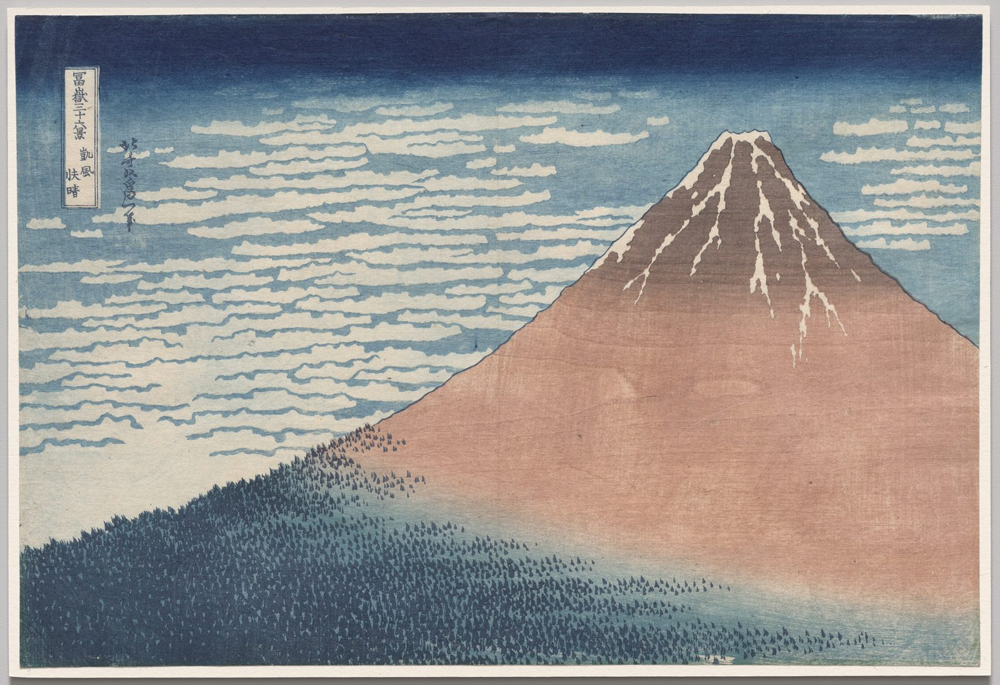

References / Illustration / 469
Hokusai, South Wind, Clear Sky (Red Fuji)
Mount Fuji fills the right of the sheet as one red-brown triangle under a sky that darkens to Prussian blue at the top, from Hokusai’s Thirty-Six Views of Mount Fuji.
- Source
- Cleveland Museum of Art, 1930.189
- Creator
- Katsushika Hokusai
- Made
- early 1830s
- Style
- Ukiyo-e (agent-proposed, not yet reviewed by a person)
- Moods
- Calm, bold, monumental
- Evidence
- Downloaded and inspected the Cleveland Museum of Art print image of 1930.189 (3400 × 2329 px, viewed at 1600 × 1096).
- Reviewed
- Rights
- Open license, stored. License: CC0-1.0. Rights policy
Context
Cleveland catalogues the sheet as a color woodblock print, 25.6 × 37.5 cm, early 1830s, from Thirty-Six Views of Mount Fuji, sometimes known as “Red Fuji.” CMA 1930.189.
Cleveland notes that the grain of the cherry-wood block printed onto the paper with the red dye. CMA.
Observed
- Mount Fuji is one large red-brown triangle at right. Its right slope runs off the right edge of the sheet.
- The peak darkens to brown, with white snow streaks left as paper.
- The sky fades from a dark Prussian-blue band at the top into a lighter blue, crossed by rows of cream cloud shapes with blue edges.
- The lower slope is a dark blue-green field of small tree marks that fades upward into the red.
- Wood grain is visible in the red area.
- A narrow vertical cartouche with the series title is at upper left, with the signature in a column beside it.
Why it belongs
The print reduces the landscape to three areas, sky, mountain, and forest, so the bokashi transitions carry most of the depth.
The visible wood grain is a trace of the medium that flat digital color does not have.
Borrow
Make one large, simple shape the whole composition, and let it leave the frame on one side.
Use a narrow vertical label in the empty corner opposite the main shape.
Measured
Machine-extracted by tools/image-traits.py on . Full measurement.
- Mean chroma
- 0.13
- Palette
- #c29884 17%
- #849ba2 15%
- #d6cebd 14%
- #3e4c5b 10%
- #2d3753 7%
- #566a78 5%
- #c0c0bb 5%
- #f2eadf 3%



share_license_status: CC0 for this object. Hokusai died in 1849, so the work is public domain in Japan and the United States. License: CC0-1.0. Open the image for full size.